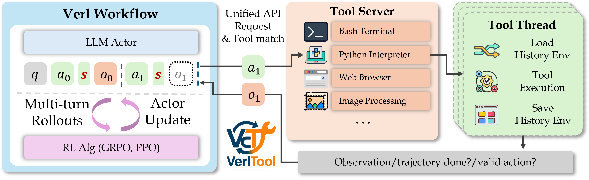
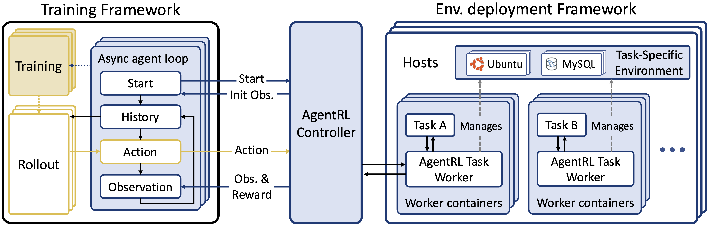

00全景与读法
原文讨论的不是单个模型，而是一个范式。概括而言：从"奖励一段推理"变成"奖励一串行动"。单轮 RLVR（如 R1）是 prompt → 回答 → 奖励的一步 MDP，几千 token；agentic RL 是观察 → 动作 → 环境 → …的多回合 POMDP，10–100+ 回合、10 万–50 万+ token，每回合一次 LLM 调用 + 一次环境交互，信号是 episode 级奖励 + 大量中间步。由此带来三个核心难题：① 信用分配（episode 级奖励在上百回合里几乎没信息）、② 工具集成推理 TIR（学会"何时/如何/用哪个"工具，而非模仿 ReAct 脚本）、③ 长 rollout 的系统开销。一批框架（VerlTool、AgentRL、SkyRL-Agent、ProRL Agent、ARLArena）和综述正在把它工程化。对 RL-on-NPU 的结论是：超长 agentic rollout 把昇腾"无 sleep-mode + 64GB HBM"的显存痛点放大到极致——这恰恰让 async/解耦 rollout、量化 rollout、稀疏注意力（D02/D04/D05）在这里收益最大。
每一节固定三段：叙事怎么说（左栏，灰）/ 证据是什么（右栏，橙）/ 本站判断（下方色块）。数字按来源分三类标注：第三方 独立测量或综述归纳、自报 论文或框架作者口径、推断 本站分析。原文自称论文均为 arXiv 一手来源；原文中标 provisional 的选型表在本文保留同一标注。
一条贯穿全文的线索：三个难题不是并列的，而是互相放大的环——中间步质量影响工具选择，更多工具回合放大系统开销，异步 rollout 又改变 advantage 的计算时序。原文对 NPU 的全部判断都落在这个环的第三个节点（系统开销）上。
01什么是 Agentic RL
原文用一张对照表给出定义。它把 LLM 从"passive sequence generator"重塑为"autonomous decision-maker"：自己决定何时调工具、调哪个、看了结果怎么继续——靠结果驱动（outcome-driven）而非模仿示范（imitation）。
| 单轮 RLVR（如 R1） | Agentic RL | |
|---|---|---|
| 形式 | 一步 MDP：prompt → 回答 → 奖励 | 多回合 POMDP：观察 → 动作 → 环境 → … |
| 轨迹 | 1 次生成 | 10–100+ 回合，每回合 LLM + 环境 |
| token | 几千 | 10 万–50 万+ |
| 信号 | 一个可验证奖励 | episode 级奖励 + 大量中间步 |
| 能力 | 推理 | 用工具、查资料、写代码、跑命令、纠错重试 |

这张图怎么读
看拓扑差别：上半部分没有回边，下半部分有一条"返回新观察"的回边。这条回边就是 agentic RL 全部难题的来源——有了回边，轨迹长度不再由一次生成决定而由环境交互次数决定（引出长 rollout），奖励与动作之间隔着任意多次循环（引出信用分配），而每次循环中的动作是工具调用（引出 TIR）。
再看下半部分从环境执行引出的第二条边：它不回到观察，而是指向"整条轨迹 10 万–50 万 token"。这提示轨迹是环境交互的累积产物，token 量与回合数正相关——这正是第 08 节 KV cache 巨大的直接原因。
这张图怎么读
这张图把图 1 下半部分的环再放大一层，重点在右侧那段虚线："循环 10 至 100+ 回合"之后才有"轨迹结束"，之后才有奖励。奖励与环之间隔了一整个虚线段——这是第 03 节"信号被稀释"的图示：一个标量要分摊回虚线段之前的全部回合。
最右侧"结果驱动而非模仿示范"是另一条虚线，连接奖励与策略更新。它说明 agentic RL 与 SFT 的分界不在环的结构（ReAct 式 SFT 也有同样的环），而在更新信号来自哪里：来自奖励（结果）还是来自示范轨迹（形式）。第 04 节的 TIR 讨论围绕这条虚线展开。
叙事怎么说
Agentic RL 只是把 RLVR 套到多轮工具调用场景，算法（GRPO/PPO）不变，只是 prompt 更长、轨迹更长。
证据是什么
第三方 原文的对照表显示，五个维度中形式（MDP → POMDP）、信号（单一可验证奖励 → episode 奖励 + 中间步）两项是结构性变化，不是量的差别；轨迹与 token 两项差两个数量级（几千 → 10 万–50 万+）。这些是综述（arXiv 2509.02547）归纳的范式特征，非某一实验的测量。
本站判断"时间尺度"是原文选定的根本区别，本站同意：形式与信号的变化都是时间尺度拉长的后果。POMDP 的部分可观测性来自环境状态不完全暴露在上下文中，episode 奖励的稀疏来自回合数增加。因此讨论 agentic RL 的任何难题，都应先问"回合数是多少"——原文后文的"够用粒度"判断正是以回合长度为变量。
02三个核心难题总览
原文把难题归为三个。① 信用分配（Credit Assignment）——最困难的前沿：轨迹跨上百回合，只有最后一个 episode 级奖励，中间各步的贡献难以区分；2026 的一篇综述梳理了 47 种信用分配方法，按两维分类——粒度（token / segment / step / turn / multi-agent）× 方法（蒙特卡洛 / 时序差分 TD / 基于模型 / 博弈论 / 信息论）。② 工具集成推理（TIR）/ ARLT：从 ReAct 式"先想后做"的事后拼接，走向深度交织的多轮工具使用，RL 把范式从"模仿工具调用脚本"换成"按结果优化"。③ 长 rollout 的系统开销：一条 agentic 轨迹要跑几十次"生成 + 环境往返"，rollout 比单轮重得多、长尾更严重、显存占用急剧增长，所以 agentic RL 框架普遍选择异步 rollout。

这张图怎么读
三个子图内部各是一条"问题 → 对症"的短链，这部分只是复述定义。真正的信息在三条跨子图的虚线，它们构成一个有向环：C1 → C2 → C3 → C1。这意味着三个难题不能各自独立解决——解 C3 的手段（异步）会反作用于 C1（advantage 用新策略状态算、轨迹却在旧策略下生成）。
最值得注意的是 C3 → C1 这条边："异步 rollout 改变 advantage 计算时序"。它把系统层的决策（异步与否）与算法层的难题（信用分配）连在一起，是原文第 07 节"跨回合 advantage 计算需额外防范 train-inference 漂移"这一 NPU 判断的结构依据。读这张图时，应把它看作一个反馈系统而不是三个清单。
叙事怎么说
三个难题中算法层的信用分配最重要，工具集成是 prompt 工程问题，系统开销靠加卡解决。
证据是什么
第三方 原文明确把信用分配标为"最困难的前沿"与"agentic RL 能否扩到长程任务的瓶颈"，依据是综述归纳的 47 种方法仍无通用解法。推断 但原文同时指出 agentic RL 框架普遍选择异步 rollout——说明系统开销已迫使框架层做出架构选择，而不是可以加卡绕过的次要问题。
本站判断三个难题的成熟度不同：系统开销已有共识解法（异步解耦），TIR 已有明确方法论（按结果优化替代模仿），信用分配仍是开放问题。这决定了 NPU 团队的切入顺序——先在系统层复现异步 + 量化（有标准答案），再在环境/奖励层做贡献（低门槛），信用分配层则以"够用粒度"的工程选型为主而非追求理论最优。
03信用分配：最困难的一环
在单轮 RLVR 里，信用分配几乎不成问题：一步 MDP，一个动作对应一个可验证奖励，梯度直接落在产生答案的 token 上。Agentic RL 改变了这一前提——一条轨迹跨 10–100+ 回合、通常达 10 万到 50 万 token，而奖励往往只在 episode 结束时给一个标量。问题立刻变成：这一个标量，要怎么公平地分摊回上百个回合、成千上万次 token 级决策？
信号被稀释。一个 episode 级奖励平摊到 100 个回合，每回合分到的平均信息量极低；真正决定成败的可能只是其中两三步关键决策（选错工具、漏了检索、在某分支走偏），其余 97 步要么无关、要么无实质贡献。但稀疏 outcome 奖励无法区分这些：它只知整条轨迹成功还是失败，不知贡献与失误各在哪一步。结果是大量正确中间步因最终失败被一起惩罚，大量平庸甚至有害步骤因最终成功被一起强化。回合越多，这种整体连带奖惩越严重，有效信噪比越低——这也是为什么综述要梳理多达 47 种方法：它本质是一个被反复研究但尚无通用解法的开放问题。

这张图怎么读
两条纵向链各自是有序的：粒度维从细到粗，方法维大致从"无偏高方差"（蒙特卡洛）到"结构化先验"（博弈论、信息论）。两个维度的顺序方向不同——粒度越粗方差越小、定位越差；方法越靠右偏差越大、越依赖建模假设。47 种方法就是在这个二维空间中寻找不同的方差—偏差—定位折中。
这张图是概念网格，没有标出哪些格子拥挤、哪些格子空缺。要看实际分布，请对照图 5（综述配套仓库的谱系图）：那里能看到 agentic RL 方法集中在哪一行。

这张图怎么读
先看颜色按行的分布：蓝色（推理 RL）集中在 Token 与 Segment 两行（VinePPO、RED、T-REG、SPO、TEMPO、SCAR），红色（agentic RL）几乎全部落在 Step/Turn 行（GiGPO、ArCHer、AgentPRM、SWEET-RL、HCAPO、CCPO、CARL、Turn-PPO、SORL、TARL、ITPO、LaRe 等）。这是对原文"长程任务上 turn 级常是性价比最优点"这一判断的经验佐证：研究社区在 agentic 场景下实际选择的工作粒度就是回合。
再看密度：Step/Turn 行是整张图最拥挤的一行，其中 TD/Value 列与 LLM-as-Critic 列的交叉处最密——这对应原文"TD 用自举逐步传播价值、信用能沿回合链回传"的描述，也说明用 LLM 做评审来补足价值函数难以训准的问题已成一个方法族。Multi-Agent 行只有四个条目（M-GRPO、LLM-MCA、QLLM、C3†），是谱系中最稀疏的一行。
最后看灰色虚线箭头：从左上（Token × Monte Carlo）指向右下（Multi-Agent × Info-theoretic）。它表达的趋势与原文一致——粒度从细到粗（因为 100+ 回合上 token 级信号被噪声主导），方法从采样估计走向结构化构造（原文所述"基于模型、信息论等方法被不断提出的原因"）。注意该图为综述作者的归纳，条目数与原文所述 47 种未必一一对应。
粒度的取舍是核心张力。采用较粗粒度（episode / turn 级）：信号强、统计稳（一个 turn 聚合内部所有 token 的贡献，优势估计噪声小），代价是定位差（知道整回合好坏，但无法区分回合内哪几个 token 起作用，梯度分散在整段上）。采用较细粒度（token 级）：定位准（理论上能精确到 token），但单 token 上有效信号极弱、方差极大、噪声主导，长程稀疏下往往是在拟合噪声、训练易失稳。step / segment 级居中。蒙特卡洛 vs TD 是长程下的方差—偏差权衡：MC 用整条轨迹真实回报，无偏但长轨迹上方差爆炸；TD 用自举逐步传播价值，方差小、信用能沿回合链回传，但引入偏差且极长程下偏差累积、价值函数本身难以训练准确。长程恰是两者各自最不利的区间——这正是基于模型、信息论等方法被不断提出的原因。
叙事怎么说
粒度越细越好：token 级 advantage 理论上最精确，工程上只要算力够就应做到 token 级。
证据是什么
推断 原文的论证：粒度每细一档，开销和方差均上升，收益可能为负；"够用粒度"是工程选择而非理论最优——问的是"这个任务的奖励稀疏度、回合长度、单步重要性分布，需要多细才能把信号传到位、又不被噪声淹没"。第三方 图 5 显示 agentic RL 方法在实践中集中于 Step/Turn 行，与该判断一致。
本站判断原文把信用分配定性为"被反复研究但尚无通用解法的开放问题"，本站同意，并补一点：47 种方法的存在本身就是"无通用解"的证据——若有一种方法在长程上稳定占优，谱系不会持续扩张。对工程团队而言，这意味着不应等待理论收敛，而应以 turn 级为默认起点做任务特定的粒度选型（第 07 节的选型表）。
04TIR：从模仿 ReAct 到按结果优化工具
工具集成推理（TIR）是 agentic 能力的核心：模型要决定何时调工具、调哪个、怎么读返回、读完如何续推理。用模仿示范（SFT）和用 RL 按结果优化（ARLT），学到的是两种本质不同的东西。模仿学到的是"形式上接近工具使用"：SFT 在 ReAct 轨迹上做下一 token 预测，优化"复现示范的 token 分布"——该出现 Action: 的地方出现 Action:，工具名和参数格式正确、接近专家轨迹，但它优化的从来不是"调用是否真有用"。典型失败：格式正确但时机不当、查询通顺但检索不到关键信息、获得返回后不据结果调整（在空结果下仍继续生成无依据内容）、分布外情形不会自适应——因为它从未见过"调用出错之后如何补救"的样本。
RL 按结果优化学到的是"有效使用工具"：outcome-driven 信号不在乎轨迹像不像示范，只在乎最终有没有把任务做成。正因为信号绑在结果上，模型能学出 SFT 学不到的几类能力——何时调（信息不足时主动触发）、调哪个（在多工具间按预期收益选择）、看结果怎么续（据返回决定采纳、换查询、还是换工具重试）。这些是"对工具调用后果建模"的能力，而后果信息只存在于 outcome 奖励里，示范的 token 分布里没有。

这张图怎么读
先看左侧的轨迹条：q → a0 → s → o0 → a1 → s → o1。动作与观察交织在同一条 token 序列里，而不是 ReAct 式"先想完再拼接"——这就是原文所说"从事后拼接走向深度交织的多轮工具使用"的物理形态。其中 o1 用虚线框表示，说明它在 actor 生成时尚未存在、要等工具返回后才填入：模型必须在不知道返回内容的情况下决定 a1，这正是"何时调、调哪个"需要按结果学习的原因。
再看中右两块：Tool Server 以统一 API 接多种工具，Tool Thread 负责加载与保存历史环境状态——即环境是有状态的（Load / Save History Env），一次调用的后果会影响后续调用。底部返回的三项（Observation / trajectory done? / valid action?）是环境给 RL 的全部信号：其中 valid action? 是一个即时的格式级信号，而任务成败仍要等 trajectory done。这对应原文"奖励稀疏让工具学习格外难"——图中没有任何一处给出"这次调用是否有用"的过程奖励，该信号需要另行设计（第 07 节的 agentic verifier / 过程奖励）。原文表格中 VerlTool 的关键点是"全异步 rollout，统一工具接口"，图中 Unified API 对应后者，前者未在此图中显示。
叙事怎么说
工具调用靠 SFT 教格式即可，ReAct 轨迹足够多时模型自然学会用工具；RL 只是锦上添花。
证据是什么
推断 原文的机制论证：SFT 优化的是与示范的相似度，"调用后果"信息只在 outcome 奖励里，示范的 token 分布中没有；因此"何时调、调哪个、看结果怎么续"三类能力原则上不能从模仿中学到。原文未给 SFT 与 ARLT 在具体基准上的对照数字。
本站判断原文指出 TIR 的 RL 有一个反向风险：一条成功轨迹里 10 次工具调用真正起作用的或许只有 2 次，outcome 奖励却把 10 次一起强化；失败轨迹里某次关键调用其实是对的，也因后续走偏被一起惩罚——这会使模型习得"过度调用工具""不甄别调用结果"等不良策略。所以 TIR 的 RL 往往要配合更细的信用分配粒度（turn / step 级），或借 agentic verifier、过程奖励，把"这次调用是否有用"的信号从最终结果里剥离出来。这把第 03 节与第 04 节连成一体：TIR 的质量上限受信用分配粒度约束。
05长 rollout 与异步：同步模式受长尾阻塞的原因
Agentic rollout 的轨迹长度分布是重尾的：同批任务里大部分轨迹很短（几回合就终止），少数极长（反复调工具、反复试错，长达 10 万–50 万 token）。这个形状对系统吞吐是致命的。同步批生成会被最长的轨迹阻塞：经典 on-policy 同步流程是 rollout 整批 → 全部生成完（barrier）→ 算 advantage → 更新 → 下一批。只要一批里有一条要跑 100 回合，整批就得等它，先完成的几十条短轨迹对应的 NPU 算力就处于空闲等待。对昇腾这个痛点被放大：无 sleep-mode，空闲推理实例不能让出显存/被回收，等待期间资源被实际浪费；叠加 64GB 显存，超长 rollout 的 KV cache 本就紧张，长尾期间仍持续占用。
异步解耦通过分离生成和训练解决该问题：推理 server 持续产出轨迹，先完成先交付；trainer 从完成队列拉取已完成的轨迹组成 batch 即可更新，不等仍在运行的长轨迹。短轨迹完成后立刻被消费、推理实例立刻接新任务，长轨迹在后台继续运行而不阻塞其他部分，NPU 利用率显著回升。代价是 staleness 与 off-policy：一条轨迹开始生成时用 πold，等它（尤其长轨迹）跑完交给 trainer 时策略已更新过几次成 πnew；轨迹越长、异步程度越高，staleness 越严重（长尾轨迹恰是最陈旧、又往往信息最丰富的困难样本）。所以异步并非没有代价，需配合重要性采样修正、限制最大 staleness、或对过旧轨迹降权。

这张图怎么读
这张图是原文"异步解耦"与"多任务规模化"的工程形态。看三点。第一，左侧的 agent loop 是叠放的多层（Async agent loop 有多个副本）——每条轨迹各自循环 History → Action → Observation，不存在跨轨迹的 barrier，这就是原文所说"推理 server 持续产出轨迹，先完成先交付"。Training 与 Rollout 以虚线相连，表示两者是解耦的两组实例，训练消费已完成的轨迹。
第二，中间的 Controller 是唯一的跨界通道：Start / Init Obs. / Action / Obs. & Reward 四种消息，把 LLM 侧与环境侧完全隔开。这意味着环境可以独立扩缩容——右侧 Hosts 与 Worker containers 是叠放的多层，Task A、Task B 并列，对应原文表格中 AgentRL 的定位"多轮 × 多任务 RL 系统，规模化 agentic 训练"。
第三，环境是真实容器（Ubuntu、MySQL），不是模拟器。这提示了长 rollout 的另一个成本来源：环境往返包含真实系统调用，回合时延不由 LLM 决定——这与原文"几十次生成 + 环境往返"的描述一致，也是第 07 节"模拟环境绕开真实环境的昂贵与不可复现"这条路线的对照面。图中未显示 staleness 控制机制（重要性采样修正或最大 staleness 上界），原文指出异步必须配合这些手段，读图时应把它视为缺省的部分。
叙事怎么说
agentic rollout 只是更长的推理，加大 batch、加卡即可；同步 on-policy 最干净，应尽量保持同步。
证据是什么
推断 原文的论证：轨迹长度分布重尾，同步 barrier 使整批耗时由最长轨迹决定，短轨迹对应算力空闲等待——加卡只会等比放大空闲。第三方 原文指出 agentic RL 框架"普遍选择"异步 rollout（VerlTool 全异步、AgentRL 异步 agent loop 见图 7）。
本站判断原文的一个关键观察值得单独强调：长尾轨迹恰是最陈旧、又往往信息最丰富的困难样本。这意味着异步方案中"对过旧轨迹降权"的做法与"保留困难样本"的目标直接冲突——staleness 上界不能简单按年龄一刀切，需要考虑轨迹的信息量。这一张力与 D02 的"够用阈值"是同一问题在 agentic 场景的加强版，原文未给出解决方案。
06框架地图（2026）
原文列出七个框架与三篇综述入口。综述：《The Landscape of Agentic RL for LLMs》（arXiv 2509.02547）、《From Reasoning to Agentic: Credit Assignment》（2604.09459）、《Rethinking Agentic RL in LLMs》（2604.27859，已在 RL 标签）。
| 框架 | 定位 | 关键点 |
|---|---|---|
| VerlTool（ARLT） | verl 上的工具使用 agentic RL | 全异步 rollout，统一工具接口（arXiv 2509.01055） |
| AgentRL | 多轮 × 多任务 RL 系统 | 规模化 agentic 训练（2510.04206） |
| Agent-R1 | 工具环境下的多轮推理 RL | 多轮 + 工具调用 |
| SkyRL-Agent | 高效多轮 agent 训练 | 针对多轮的训练效率（2511.16108） |
| ProRL Agent | Rollout-as-a-Service | 把 agent rollout 生命周期做成 API（2603.18815；见 RL 标签卡） |
| ARLArena | 统一、稳定的 agentic RL | 稳定性 + 统一环境（2602.21534） |
| AgentV-RL | 用 agentic verifier 扩奖励建模 | 奖励侧（2604.16004） |
叙事怎么说
agentic RL 框架众多、互相替代，选一个最流行的即可。
证据是什么
推断 七个框架的定位覆盖不同层：工具接口层（VerlTool）、多任务规模化（AgentRL）、训练效率（SkyRL-Agent）、rollout 服务化（ProRL Agent）、稳定性与统一环境（ARLArena）、奖励侧（AgentV-RL）。它们解决的是第 02 节三个难题的不同侧面，重叠度低于表面看起来的程度。
本站判断七个框架中有六个直接或间接围绕第三个难题（系统开销与稳定性），只有 AgentV-RL 在奖励侧——框架层的投入分布与原文"研究投入集中在算法、环境/奖励关注度低"的观察一致。ProRL Agent 的 Rollout-as-a-Service 值得关注：把 rollout 做成 API 意味着 rollout 引擎与训练框架可以异构部署，这对"vLLM-Ascend 生成 + 其他框架训练"的 NPU 组合是有利的抽象。
07被低估的一环：环境、奖励与够用粒度
研究投入大多集中在算法上，而数据 / 环境 / 奖励设计关注度低得多——但它常常是上限所在。原文列出三条路线：可验证奖励（RLVR）——用单元测试、答案校验等自动信号，而非学一个奖励模型，agentic 场景下尤其稳；rubric-based + 模拟环境 + 合成任务——像《Mock Worlds, Real Skills》（arXiv 2601.22511）那样，用合成任务 + 模拟环境 + 评分量表训出小型 agent，绕开真实环境的昂贵与不可复现；agentic verifier——用智能体本身去做更细的奖励判定（AgentV-RL）。
原文给出一张"够用粒度"选型表，把信用分配的四档粒度沿信号强度、定位精度、工程开销和适用场景摊开。原文明确标注：这是面向工程取舍的 provisional 速查，不是某篇论文的实验结论。
| 粒度 | 信号强度 | 定位精度 | 计算/工程开销 | 适用场景 |
|---|---|---|---|---|
| episode 级 | 最强（整条轨迹聚合，统计最稳） | 最差（只知整体输赢） | 最低（一个标量，几乎无额外结构） | 短轨迹、回合少、单步同质；或仅作 baseline / 冷启动 |
| turn 级 | 强（每回合聚合，信号仍清晰） | 中（能定位到"哪个回合"） | 中（需按回合切轨迹、回传回合级 advantage） | 长程多回合、工具调用稀疏、回合是天然决策单元——常见性价比最优点 |
| step 级 | 中（单步信号，开始变弱） | 较高（能定位到具体动作/工具调用） | 较高（需 step 级价值估计或过程奖励） | 单步重要性差异大、需精确归因关键动作 |
| token 级 | 最弱（单 token 信号被噪声主导） | 最高（理论上精确到 token） | 最高（token 级 advantage，方差大、易不稳） | 短程或奖励较稠密；长程稀疏下慎用 |
叙事怎么说
环境与奖励是数据工程，不是研究；有了好算法，奖励用 outcome 标量即可。
证据是什么
推断 原文的判断：环境/奖励"常常是上限所在"；turn 级在长程任务上常是性价比最优点，理由是"回合"是天然决策单元——工具调用、推理转折、状态变化大多发生在 turn 边界上，turn 级恰在这个语义边界。第三方 图 5 中 agentic RL 方法在 Step/Turn 行的集中分布与此一致。选型表各格的定性描述为原文 provisional 判断，无实验数据支撑。
本站判断原文对 turn 级的推荐逻辑是：比 episode 级细得足以把 outcome 信号定位到具体回合，又比 step / token 级粗得足以保持信号强度、抑制方差，工程上只需按回合切轨迹、回传回合级 advantage，不必维护脆弱的 token 级价值函数；某些任务里"单步"差异格外关键时，再局部下沉到 step 级。在 NPU 上，跨回合 advantage 计算需额外防范 train-inference 漂移：异步 rollout 的 staleness（轨迹在旧策略下跨多回合生成，advantage 却用新状态算）与 NPU 重写算子的数值路径不一致叠加，同一轨迹"生成时"和"训练时"算出的 logprob/价值对不上，跨回合回传时误差还沿回合链累积。工程对策是显式做 align-probe：在生成端和训练端对同一批输入比对 logprob/中间量，量化漂移并设阈值告警。
08对 RL-on-NPU 的意义
Agentic RL 几乎是为"放大昇腾痛点"量身定制的，但也因此最能体现前几期所述技术的价值。原文四点：超长 rollout = 显存痛点放大到极致——10 万–50 万 token 的多轮轨迹 KV cache 巨大，而昇腾 910B 单卡 64GB、无 vLLM sleep-mode，rollout 与 train 抢显存（见 NPU 架构页"RL 显存争用"视图），agentic 场景下这个矛盾最尖锐；前几期的技术在这里收益最大——异步/解耦 rollout（D02 的 VerlTool/AgentRL 同源思路）、量化 rollout（FP8/INT8，D02）、稀疏注意力 / KV 压缩（MSA/DSA/CSA-HCA/SWA，D04/D05/D07），每一项都直接降低 agentic rollout 的显存与时延；环境/奖励设计是 NPU 团队的低门槛切入点——可验证奖励 + 模拟环境算力轻、价值高，不必先解决大规模训练就能做出贡献；信用分配在 NPU 上还需额外防范一层——跨回合的 advantage 计算 + NPU 上重写的算子会叠加 train-inference 数值漂移，align-probe 在此同样适用。

这张图怎么读
左侧是一条四级因果链，注意三项对症技术接入链条的位置不同：异步/解耦与量化从链尾 L4（抢显存）引出，是对结果的缓解；稀疏注意力/KV 压缩以虚线从 L2（KV cache 巨大）引出，标注"直接压 KV 占用"，是对更上游原因的干预。位置越靠上游，理论上收益越大，但实现难度也越高——稀疏注意力需要模型架构配合，异步与量化只需系统层改动。
再看 F1 到 WIN 的虚线标注"不被最慢轨迹阻塞"：三项技术中只有异步同时缓解显存与长尾两个变量（另两项只压显存）。这与 D02 中 APRIL 的定位相似——凡能同时处理长尾的手段，在 agentic 场景下的价值高于其在单轮场景下的价值，因为 agentic 的长尾更重。
叙事怎么说
agentic RL 对硬件的要求主要是算力，NPU 与 GPU 的差距在算力峰值；显存问题靠 TP/PP 切分解决。
证据是什么
第三方 910B 单卡 64GB、无 vLLM sleep-mode 是硬件与软件栈现状。推断 原文的论证：10 万–50 万 token 轨迹的 KV cache 与 train 侧在同一份 HBM 上争用，是显存容量与释放机制问题而非算力问题；原文未给出 agentic rollout 在 910B 上的实测显存占用或 OOM 阈值。
本站判断原文的核心论断是"agentic RL 几乎是为放大昇腾痛点量身定制的，但也因此最能体现前几期技术的价值"——这是一个双向判断：同一个特性（超长轨迹）既是风险也是前几期技术的最大应用场景。四条建议中，环境/奖励设计被单独标为"低门槛切入点"，理由是算力轻、价值高、不依赖大规模训练——本站认为这是四条中对 NPU 团队最具操作性的一条，因为它不受显存约束限制。
09叙事 vs 证据：一页总表
| 主题 | 叙事怎么说 | 证据是什么 · 本站判断 |
|---|---|---|
| 范式 | RLVR 套到多轮场景，算法不变 | 形式（MDP → POMDP）与信号（单一奖励 → episode 奖励 + 中间步）是结构性变化；轨迹与 token 差两个数量级。根本区别是时间尺度 |
| 难题排序 | 信用分配最重要，系统开销加卡解决 | 三难题构成互相放大的环（图 3）；成熟度不同：异步有共识解法，TIR 有方法论，信用分配仍开放 |
| 信用分配 | 粒度越细越好 | 47 种方法、无通用解；粒度每细一档开销与方差均升；agentic 方法实际集中在 Step/Turn 行（图 5） |
| TIR | SFT 教格式即可 | SFT 学形式、RL 学后果；"何时调 / 调哪个 / 看结果怎么续"只能从 outcome 奖励学；但稀疏奖励会习得过度调用等不良策略，需配细粒度信用分配或过程奖励 |
| 长 rollout | 加大 batch、保持同步 | 重尾分布下同步 barrier 由最长轨迹决定；框架普遍选异步（VerlTool、AgentRL，图 6–7）；代价是 staleness，长尾轨迹最陈旧又最有信息 |
| 框架 | 互相替代，选最流行的 | 七框架覆盖工具接口 / 多任务 / 效率 / rollout 服务化 / 稳定性 / 奖励侧，六个围绕系统难题、一个在奖励侧 |
| 环境与奖励 | 数据工程，非研究 | 原文判断其"常常是上限所在"；RLVR、rubric + 模拟环境、agentic verifier 三条路线；NPU 团队低门槛切入点 |
| 够用粒度 | 理论最优粒度存在 | provisional 选型表；turn 级为长程默认起点（回合是天然决策单元），局部下沉 step 级 |
| NPU 位置 | 差距在算力峰值 | 10 万–50 万 token KV cache × 64GB × 无 sleep-mode 是显存问题；异步 / 量化 / 稀疏注意力在此收益最大（图 8）；跨回合 advantage 需 align-probe 防漂移 |
10原文没给的东西 / 未能核实的东西
以下是复现或引用时必须自行确定、或原文未给出数据与理由的项目：
- "10 万–50 万 token"与"10–100+ 回合"的测量条件：原文为范式描述的典型量级，未给出具体任务集与统计口径；
- 47 种信用分配方法的清单：原文只给分类维度与总数，具体方法与各自适用区间需查综述 2604.09459；图 5 的条目数与"47"未必一一对应；
- SFT 与 ARLT 的对照实验数字：原文的 TIR 论证为机制推理，未给任何基准上的对照结果；
- 够用粒度选型表各格的依据：原文明确为 provisional 工程判断，非实验结论；"turn 级为性价比最优点"无量化支撑；
- 七个框架的性能数字：原文只给定位与关键点，未给吞吐、稳定性或基准对比；Agent-R1 未给 arXiv 编号；
- 异步 staleness 的处理方案：原文列出重要性采样修正、最大 staleness 上界、过旧轨迹降权三类，未给参数与效果；"长尾轨迹最陈旧又最有信息"的张力原文未给解法；
- agentic rollout 在 910B 上的实测显存占用：原文的"放大到极致"为定性判断，未给 OOM 阈值或占用曲线；
- align-probe 的判据：可接受的 logprob/价值漂移量级与告警阈值，原文只给职责定义；
- 本文原图 3 张分别取自综述配套仓库（xxzcc/Awesome-Credit-Assignment-in-LLM-RL）、VerlTool（TIGER-AI-Lab/verl-tool）与 AgentRL（THUDM/AgentRL）的 GitHub README；原文所引其余论文（2509.02547、2604.27859、2511.16108、2603.18815、2602.21534、2604.16004、2601.22511）的原图受网络代理限制未能获取。
11判断与下一步
一、agentic RL 的一切难题都是"回合数"的函数。信号稀释程度、轨迹重尾程度、KV cache 规模、staleness 严重度全部随回合数单调上升。评估任何方法或框架时，先确认它验证过的回合数区间，再判断能否外推到 100+ 回合。
二、turn 级是长程信用分配的默认起点，不是理论最优。它落在"思考—行动—观察"的天然语义边界上，信号够强、方差可控、工程开销中等；研究社区的实际选择（图 5 中 agentic 方法集中在 Step/Turn 行）与原文判断一致。需要精确归因关键动作时再局部下沉到 step 级。
三、对 NPU 团队，环境与奖励设计是不受显存约束的切入点。可验证奖励、模拟环境、agentic verifier 三条路线算力轻、价值高；而系统层（异步 + 量化 + 稀疏注意力）的复现必须以 align-probe 为前置，因为跨回合 advantage 与重写算子叠加会放大 train-inference 漂移。
读两篇综述（2509.02547 + 2604.09459）建立地图，再选一个框架（VerlTool / AgentRL）完成一个多轮工具任务 · 在昇腾上复现一个多轮 agentic RL：量化 rollout + 异步，量化它对 64GB HBM 的缓解——这正是看板 Project Ideas 里"异步 off-policy RL"那条的 agentic 版 · 信用分配的"够用粒度"：turn 级 vs step 级 vs token 级，在长程任务上哪一档性价比最高 · 环境设计：把 MiMo Code / Terminal-Bench 这类 200+ 步任务做成可训练的 RL 环境。